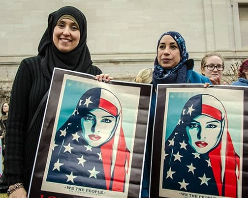

“Subhanalla-thee sakh-khara-lana haatha wa-ma kun-na lahoo muqrineena wa inna ila Rabbina la-mun-qali-boon.”
This is an Islamic invocation summoning Allah. Frightening? Most people may believe so, but a clear understanding of this prayer will ease the fear. It is intended to evoke peace and safety, as this is a prayer recited before embarking on a journey. Appropriately, this paper intends to take its readers on a journey as well. More specifically, this paper will take its readers on a journey from the fear of Islam, or of any religion, to an understanding of religion’s peaceful nature. The correct interpretation of Islam, is unknown to the general public. In fact, the true interpretations of many religions are hidden behind the manipulation of religious teachings and crimes of extremist groups. The fear of extremism of religious organizations directly translates to fear of their religions, but I argue that the ideologies they supposedly follow do not encourage extremists; instead, cultural and political influences dictate their crimes and motives.
Fear comes from ignorance. Humanity tends to fear the unknown, especially when it comes to intangible concepts like faith. In the last two decades following the terrorist acts of September 11, 2001; America’s judgment of faith has targeted Muslims and immigrants alike who follow religions other than the predominant Christianity; typically including religions originating from South Asia and the Middle East. Fear of religion from these regions translates to the discrimination of followers of these faiths. This, in turn, translates further into physical violence, and even war and genocide. The organizations that commit crimes associate themselves with Islam, and claim to fight in the name of God. Because of their claims, people generally believe what they say. If they say that Islam teaches them to hate America, then many people will believe them. If they act violent towards America, saying that their religion teaches them to take vengeance, then people will continue to believe them. However, what many people do not know is that the claims of these terrorist organizations or individuals are in fact diametric to the true teachings of their faith. Because this is not recognized, Islam is misinterpreted as a dangerous religion characterized by hatred; evil; and animosity for the west. This misunderstanding is directly relatable to all faiths that have faced discrimination because of misrepresentations of their religions.
The individuals who claim to fight in the name of their religions are often the ones who know the least about their religions. Their ignorance is misunderstood as strong belief and piety. In Islam, “peace is characterized by an absence of not only physical violence, but also of internal ruinations caused by the preponderance of vicious attributes in the spiritual and mental faculties” (Hamid and Mydin 157-158). To Muslims who practice Islam correctly, nonviolence and healthy, kind attitudes towards others is important. However, these terrorist groups fight to kill, contradicting the true teachings of Islam, or any other religion. They believe that they are justified in harming others, convincing people that their beliefs can be generalized to all Muslims. Their conviction to their cause is what gives way to great misinterpretation of the differences between their beliefs and the general public’s beliefs. Those who seem to represent their religion in the face of violent vindication arguably know the least about the faiths they claim to uphold.
One of the factors that cause this violent vindication is political conflict. The political demands of certain countries are perceivably interrelated to religious allegiances. However, this perception is not true. It is common for countries to establish an official state religion, but integrating the religion with political governing leads people to believe that religion solely rules that state. It is important to realize that this is a concept that applies to religions from all over the world; Islam is not solely victim to this. For example, Russia is a predominantly Orthodox Christian religion. However, the government’s ties to the Russian Orthodox Church are intensifying by the decade, and it provides little to no comfort to the general Russian public. In 2012, a group of young women performed a controversial song in Moscow’s Cathedral of Christ condemning the church’s influence on President Vladimir Putin and the Russian government. Their performance was criticized as a public disturbance characterized by religious hatred. Like many other Russians, they firmly believe that religion plays too significant of a role in politics. A major problem is that “religion and politics can rarely, if ever, be brought into complete alignment. Religious leaders who engage in politics must find a way to bridge the space between their political allegiances and religion” (Edwards 271-272); which is seldom accomplished, especially in Russia.
For example, the Ukrainian-Russian crisis in which Christian, Russian-supported rebels are fighting for territory in a predominantly Catholic Ukraine. It is a political conflict in which Putin’s Russia aims to conquer the land of Ukraine to acquire more military power. However, there are disputes over religious differences and the Russian Orthodox Church’s strong support for Putin. Violent protests, bombings, and killings continue in Ukraine and millions of citizens reside in danger and fear. Thus, the conflict is perceived as a battle over religious freedom of Ukraine. Ultimately, religion is considered the reason for conflict. However, this type of danger is solely the product of politically motivated interests, and not of the differences in faith. Especially in this current event, political motives are masked by religious endeavors.
It is important to question why religion is so often utilized as a scapegoat to disguise political conflicts of interest. Without this inquisition, we are subject to manipulation by powerful scheming authorities that can easily gain influence over the people they lead. This is especially significant in the recent United States 2016 Presidential Election. Donald Trump, the current President-Elect, is notorious for manipulation in search for political gain. His maneuvering has given way to a significant surge in religious intolerance in the United States due to divisions that already existed prior to Donald Trump’s prominent political influence. Religious divisions were further deepened because of his derogatory claims against certain religions and its believers. The deepened intolerance led to terrorism in the form of personal attacks on civilians and religious places of gathering. The resurgence of religious hatred is rooted from Donald Trump’s political agenda to retain votes from specific demographics. America witnessed him systematically condemn Muslims nationwide, and after his success in the election, he receded from his racist claims because he finally won the election. He ignited deep religious intolerance throughout the country for his own political motives, but even though he later discredited his earlier acclamations, the hatred has not subsided. Without realizing this, we are subject to continuous manipulation by shrewd leaders who are able to sense the vulnerability of gullible citizens.
The vulnerability of citizens comes to play a significant role on the fate of millions of people in a country. This is evident in Pakistan, an Islamic Republic located in South Asia. In Kashmir, a northwestern region in Pakistan, young boys are especially vulnerable to corrupt extremist teachings because the public education system in the region has collapsed. Consequently, their education is derived from “religious schools that teach very little about Islam besides small verses of the Qur’an” (AAANEWs). Instead of teaching the correct version of Islam, militant Islam is encouraged statewide. Therefore, ongoing conflicts between India and Pakistan further reside and young, strong adults are coerced into fighting a battle that is not theirs. The two nations are on the brink of nuclear conflict, because of confrontation that has survived for decades with no resolution.
The conflict originated in 1947 when the British receded from India following two centuries of colonial rule. Colonial rule was imposed in efforts to instill political and social influence in the region. Britain’s departure created a division between Indians and Pakistanis who peacefully coincided together before Britain’s colonization. For years to follow, Indians and Pakistanis will continue to fight over the highland of Kashmir that was left unclaimed by the British. The region was originally under the rule of a Hindu leader who wanted to proclaim Kashmir a province of the state of India; however, because the majority of the region’s civilians are Muslim, they “considered Kashmir as a natural part of their own cultural contested boundary” (AAANEWs). From then until today, fighting is motivated by competition over land. From outside viewers, this is a religious conflict between two parties who want to proclaim their faiths as the overall supreme. However, the truth behind the misconceptions shows that this is, in fact, violence rooting from political vendettas.
Civilians of other nations prove to be just as vulnerable as the young boys in Kashmir. Because of unreliable resources, civilians are persuaded to believe that countries like India and Pakistan are fighting purely religious battles; thus, they represent their religions. Consequently, they are led to believe that radicals are accurate representatives of their faiths. Then, all people of the same faith are generalized to resemble the same violent upbringing; thus, religious intolerance and hatred ensues. It is because of this fallacy that further researching the history of such regions and the true motives behind violent conflict is most crucial in understanding the power of misinterpretation. Without this, social conflicts reside among citizens who are vulnerable to their lack of historical background knowledge and accurate news resources.
Social conflicts are very often misconstrued as religious conflicts. Often times, when conflicts are mentioned with religion, the battle is portrayed as an insurgence of religious animosity that never before existed in that region until recent events. However, there is always an underlying historical social conflict that is ignored in the interpretation of such conflicts. The creation of the Islamic religious group, Al Qaeda, in Iraq, is direct proof of this. In Iraq, two types of Muslims reside: Shiites and Sunnis. Being that these are two different sects of Islam, they follow different practices. In 2003, the American government replaced Iraq’s Sunni government with Shiite leaders. With the Shiites in power, the predominantly Sunni population became unemployed; they lost their political influence, and the upper class Sunnis were robbed of their assets. Because of these new social constructs, animosity towards the Shiite government grew; thus, Iraq became a breeding ground for Al Qaeda. The significance of this history is that in order to legitimize religiously fueled conflict, it is crucial to understand that “a development process which does not respect the cultural and historical reality of the people it intends to benefit is bound to be violent and cause insecurity” (Kanyandago 237). The history of a Shiite government ruling a predominantly Sunni Iraq is often overlooked, or barely mentioned when acknowledging religious tensions in the region. With this in mind, history proves it impossible to have religious conflict without cultural and historical rifts that create divergence. Disagreements over religious fundamental beliefs are merely supplemental to the underlying causes of conflict, which root from historical and cultural discrepancy.
Socially, extremism thrives on close connections between people, not devotion to faith. From these close connections come trust, alliance, and brotherhood. Without these communal facets, there is no faith between group members. “Membership to a violent extremist or terrorist group is more likely to be a factor of the group’s social function than its particular ideology” (Aly and Jason-Leigh 856). Extreme religious organizations rely heavily on a culture of brotherhood, and not on piety like some people believe. Piety plays a much less significant role in radicalism than is perceived. “According to the FBI, “re-interpretation [of religion] is a key aspect of radicalization” (Aly and Jason-Leigh 855). Radicals will re-interpret religious teachings in a way to fit their discontent and personal vendettas. Thus, when they are recognized for acts of violence, they are once again taken as representatives of their faith. Because of their criminal actions, their faiths are misunderstood as dangerous teachings. Contrary to claiming to fight in the name of their God, these people will ultimately create more havoc. This leads to more discrimination against their faith, and fighting will continuously escalate between both parties. Spreading their word is what allows radicals to thrive; therefore, social interactions are most significant in radicals’ overall operation. Ultimately, it is obvious that if radicals were true believers and participants of their faith, they would not fight to kill and eliminate political enemies. More importantly, they would not reach to broaden their mission to all corners of the earth. It is nearly impossible to deny that extremism thrives on the success of societal connections.
Fear of religion roots from misinterpretation and misleading resources. Different world leaders, social media outlets, news sources, and civilians blame religious differences for the criminal hostility supervening in different regions of the world today and throughout history. History has proven that these religious differences are used to mask political and social conflicts of interest. Faith is intended to bring peace and civility to people, no matter how different one’s beliefs may be. What is acquired in fighting for the justification of a religion? There is no motivation other than hatred, hostility, and danger. As members of the human race, our duty is to look after our friends, families, and neighbors. This includes people from all across the globe. I implore us all to carefully analyze why we treat our neighbors the way that we do, and to question ourselves by asking: what led me to believe this, and is it rightfully justified? Hopefully in doing this, we will delve deeper into the root causes of illegitimate fear, and begin to denounce religious discrimination. Religion is not a cause of violence; ignorance, deception, and corruption are the real cause of violence. Religion embodies the concept of inner peace, encouraging love between our brothers and sisters all across the world. Yet, we manipulate this idea to conceal the real problems that bring us to the brink of war. The alarming reality is that most people do not comprehend the root causes of conflicts that do not directly affect us, but affect our brothers and sisters overseas, even in neighboring states. This can be because they do not care for a problem that does not bother them personally, or they simply choose to ignore the truth. On that note, we must leave the conversation by reflecting back on the characteristics of humanity by wondering, what does this say about us as people?
Works Cited
AAANEWs. “LOW LEVEL WAR IN KASHMIR.” Religious Tolerance, 14 Dec. 2016, www.religioustolerance.org/war_kash.htm
Aly, Anne, and Jason-Leigh Striegher. “Examining The Role Of Religion In Radicalization To Violent Islamist Extremism.” Studies In Conflict & Terrorism 35.12 (2012): 849-862. Academic Search Premier. Web. 14 Dec. 2016.
Edwards, Korie L. “The Space Between: Exploring How Religious Leaders Reconcile Religion And Politics.” Journal For The Scientific Study Of Religion 55.2 (2016): 271-287. Academic Search Premier. Web. 14 Dec. 2016.
Hamid, Ahmad Fauzi Abdul, and Shaik Abdullah Hassan Mydin. “The Prophet (Peace Be On Him) As A Model For Universal Peace And Justice.” Insights (20724586) 2.2/3 (2009): 153-178. Academic Search Premier. Web. 14 Dec. 2016.
Kanyandago, Peter. “Religion, Development And Insecurity: Looking For Root Causes In An Ambiguous Relationship.” Exchange 40.3 (2011): 235-256. Academic Search Premier. Web. 14 Dec. 2016.